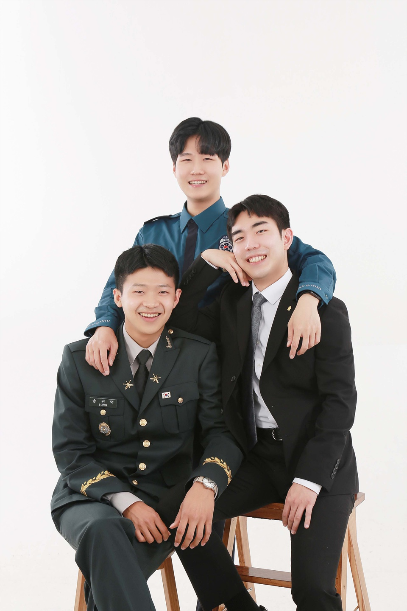

명문택
소속인물
유문지
강명수
송권택

2021년 6월 21일, 바이구 포토에서 촬영한 셋의 이미지 사진이다.
왼쪽부터 송권택(지가 제일 찍고 싶어했으면서 표정 제일 어색한 놈), 강명수(짐승), 유문지(천재)이다.
명문택은 2017년도 12월 1일 결성된 민주주의를 지향하는 학술, 군사, 음악 등을 다루는 비영리단체이다.
셋이 모이는 날엔 천재지변이 일어난 다는 속설이 있다.